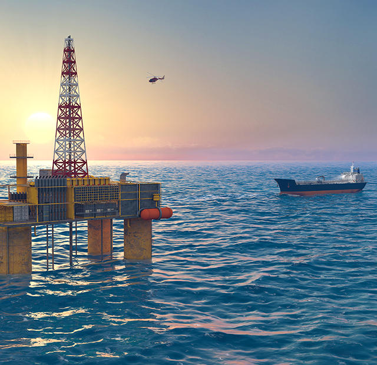
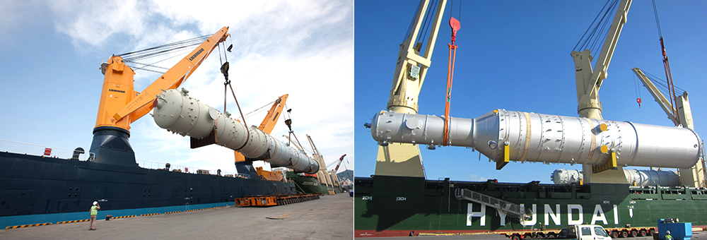
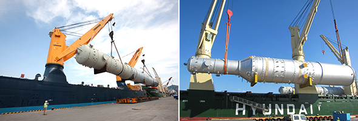
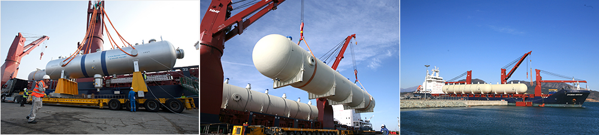
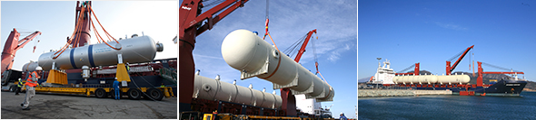

와 제 롤모델이 잡스에요!!! 아이폰 첫 출시되고 나서부터 계속 아이폰 쓰고 있는데 잡스가 너무 그리워요ㅠㅠ 지금은 돈만 벌려고 하는 것 같아서 디자인 발전도 없고ㅠㅠ와 제 롤모델이 잡스에요!!! 아이폰 첫 출시되고 나서부터 계속 아이폰 쓰고 있는데 잡스가 너무 그리워요ㅠㅠ 지금은 돈만 벌려고 하는 것 같아서 디자인 발전도 없고ㅠㅠ와 제 롤모델이 잡스에요!!! 아이폰 첫 출시되고 나서부터 계속 아이폰 쓰고 있는데 잡스가 너무 그리워요ㅠㅠ 지금은 돈만 벌려고 하는 것 같아서 디자인 발전도 없고ㅠㅠ와 제 롤모델이 잡스에요!!! 아이폰 첫 출시되고 나서부터 계속 아이폰 쓰고 있는데 잡스가 너무 그리워요ㅠㅠ 지금은 돈만 벌려고 하는 것 같아서 디자인 발전도 없고ㅠㅠ와 제 롤모델이 잡스에요!!! 아이폰 첫 출시되고 나서부터 계속 아이폰 쓰고 있는데 잡스가 너무 그리워요ㅠㅠ 지금은 돈만 벌려고 하는 것 같아서 디자인 발전도 없고ㅠㅠ
해운 이야기
그동안 몰랐던 화물 이야기 3탄
플랜트산업의 숨은 조력자,
프로젝트 물류
프로젝트 물류

글
이정엽 사원(특수화물영업관리팀)
바다 한가운데 있는 가스 생산기지나 해상풍력발전기를 소개하는 뉴스나 신문기사를 보면 누구나 한 번쯤 이런 생각을 했을 것이다. “저렇게 무거운 발전기를 어떻게 바다 한가운데로 옮겼을까?” 그건 바로 프로젝트 물류가 있었기 때문에 가능했던 것. 프로젝트 물류는 발전, 정유, 석유화학, 항만시설 등과 같이 산업의 기반 시설 또는 생산시설을 의미하는 플랜트가 하나의 프로젝트를 수행하는 데 필요한 자재 및 중량물을 선박으로 현장에 공급하는 것을 말한다. 인류의 문명이 고도화되면서 프로젝트 물류의 중요성은 날로 증가하고 있다.
플랜트산업과 프로젝트 물류의 잠재성
한국의 EPC 기업들은 해외 건설 부문 세계 5위의 매출액을 자랑하는 플랜트 업계의 강자이다. 2007년부터 2014년까지는 조선·반도체보다 높은 수주 실적을 기록했으며, 약 7,700억 달러의 누적 수주를 달성했다. 이와 관련해서 해외에 파견된 인력만 145만 명(1978년~2017년 기준)에 달했으니, 가히 EPC가 한국경제를 지탱해온 대들보였다고 할 수 있다.
인류가 에너지에 대한 의존도를 줄이지 않는 이상 프로젝트 물류 시장은 지속적으로 발전할 수밖에 없다. 세계의 유전이라 불리는 중동·북아프리카(MENA)에는 아직까지도 수백조 달러에 이르는 잠재적 프로젝트가 내재되어 있다. 이와 함께 EPC 업계는 최근 폭발적으로 성장하고 있는 베트남, 인도, 태국 등의 신흥개발도상국들을 기회의 땅으로 보고 있다.
아시아 지역에서 발주된 프로젝트 규모는 2018년에만 1,399억 달러로 전체 규모의 35%를 차지하고 있으며, 이미 중동을 제치고 전 세계 프로젝트 시장에서 독보적으로 1위 자리를 지켰다. 지난 10년간 지속된 세계적인 경기침체로 EPC산업의 명성이 예년 같지 않지만, 프로젝트 물류 시장의 잠재성은 무궁무진하기 때문에 재도약할 기회는 여전히 남아 있다.


마산항에서 프로젝트 화물을 선적하고 있는 Heavylift 선박
프로젝트 화물 운송에 적화된 Heavylift의 발전
프로젝트 물류란 플랜트와 같이 하나의 프로젝트를 수행하는 데 필요한 모든 자재 및 중량물을 현장 일정에 맞추어 수송 및 공급하는 것을 말한다. 주요 화주는 EPC 기업이며, 여기서 EPC는 설계(Engineering), 조달(Procurement), 시공(Construction) 등의 영문 첫 글자를 딴 말로 대형 건설 프로젝트나 인프라 사업 계약을 따낸 사업자가 설계와 부품·소재 조달, 공사를 원스톱으로 제공하는 형태의 사업을 뜻한다. 운송 수단은 해외 수주의 특성상 기본적으로 해상운송을 포함하며 포워딩, 엔지니어링, 육상운송, 3국 운송, 하역, 설치, 시공 등이 수반된다. 프로젝트 물류는 화물 자체가 무겁고 고가인데다, 현지로 이송 후에도 이상 없이 작동해야 하기 때문에 육상 및 해상 운송에서 고도화된 기술과 노하우가 필수이다.
프로젝트 자재들은 파손 시 대체 자재를 단기간에 생산할 수도 없고 프로젝트 계획 전체가 지연되는 결과를 초래하기 때문에 프로젝트 운송 사업은 안정성을 확보하는 데 보다 집중되어 있다. 그래서 중동의 프로젝트 발주가 폭발적으로 증가하던 1970년부터 프로젝트 화물에 최적화된 Heavylift 선박(이하 Heavylift)의 운송 산업이 이와 함께 발전해왔다.
Heavylift는 외관부터 컨테이너선과 확연히 구분된다. 컨테이너선의 경우 터미널의 갠트리 크레인으로 50톤에서 60톤까지 적양할 수 있는 반면, Heavylift는 선박 내에 설치된 크레인으로 100톤에서 2,000톤까지 적양할 수 있다. 때문에 Heavylift는 엄청난 중량을 자랑하는 프로젝트 자재들도 안전하게 적양할 수 있으며, 다양한 조건에서도 작업이 가능하다. 또, 선박 내에 크레인이 탑재되어 있는 만큼 해상 위에서도 하역이 가능하며 기반 시설이 갖춰지지 않은 포트에서도 다양한 화물들을 처리할 수 있다.
전문성과 첨단기술이 접목된 프로젝트 물류
프로젝트 화물 운송에서 Heavylift의 스펙 이상으로 중요한 것은 바로 선사의 전문성일 것이다. 특히 프로젝트 화물은 각기 다른 구조, 무게, 사이즈로 이루어져 있기 때문에 하역 과정에서의 사고 발생 위험도가 높으며 이는 프로젝트 전체에 영향을 미칠 수 있다. 그렇기 때문에 모든 프로젝트 화물 운송 현장에서는 특화된 전문성이 강조된다.
프로젝트 화물 운송은 화주로부터 전달받은 화물 설계도에서부터 시작된다. 설계도는 실제 계측에서 더 크거나 무거운 경우 운송 자체가 불가능해질 수 있기 때문에 화물감독들이 올바른 적화 계획(Stowage Plan)을 설계할 수 있도록 최대한 정확하게 작성해야 한다. 그리고 화물감독과 엔지니어는 설계도를 토대로 어떤 방식과 장비로 화물을 하역할지, 또 선창(Hold)을 어떤 위치에 배치할지 그리고 어떤 방식으로 화물을 본선에 고정시킬지를 나타내는 적화 계획(Stowage Plan) 및 선적 계획서(Method of Statement)를 작성해야 한다.
이때 화물감독은 공학적인 지식과 첨단 엔지니어링 IT시스템을 활용한다. 그리고 화물감독들은 현장에 파견되어 항만 노동자, 본선 선원, 고박사 등이 선적 계획서(Method of Statement)대로 올바르게 선적하는지 관리 감독한다. 각 현장의 경험은 화물의 안정성과 선사의 채산성에 직접적인 영향을 미친다. 이들의 전문성은 Heavylift 선사의 서비스 품질을 좌우하며, 결국 선박의 스펙과 운임 경쟁력을 뛰어넘는 최고의 경쟁력이라 할 수 있다.


Heavylift은 선박 내 설치된 크레인으로 100톤에서 2,000톤까지의 프로젝트 자재들을 적양할 수 있다
현대상선의 프로젝트 운송 서비스 및 위상
세계 최초의 Heavylift 선사가 1920년대에 태동한 것에 반해 현대상선의 Heavylift 사업부는 2007년에 탄생했다. 11년이라는 짧은 역사에도 불구하고 현대상선은 국내 1위 중량물 운송 선사로 자리매김했으며, 이를 넘어 현재는 유럽 Heavylift 선사들과 어깨를 견줄만한 선사로 성장했다. 현대상선은 현재 640톤 수용 크레인으로 화물을 적하할 수 있는 640Type의 선단 4척을 운영하고 있으며, 이는 국내 EPC 업계에서 생산되는 중량화물의 50% 이상을 운송하는 규모이다. 이외에도 현대상선은 최근 세계 3위의 Heavylift 선사인 AAL과 전략적 제휴를 맺어 700Type의 AAL의 선박 1척을 공동운항하고 있으며, 2019년에는 1척을 추가 운항할 계획이다.
현대상선은 지난 11년간 ‘선택과 집중’이라는 전략을 통해 ‘잘할 수 있는 것을 완벽하게’ 하는 데 집중해왔다. 많은 노선을 운항하는 대신, 중동 및 홍해 항로에 집중해 Heavylift 선사로는 흔치 않게 정기선 서비스를 운영해왔다. 이를 통해 척박한 중동 포트에서 꾸준히 네트워크 쌓아왔고, 유럽의 선사들과의 차별화된 서비스를 제공하여 현대상선의 Heavylift 사업을 하나의 브랜드로 성장시켰다. 현대상선 Heavylift 비즈니스는 화주에게 ‘운송의 정시성’과 ‘화물의 ‘안정성’에 대한 믿음을 제공했기에 11년 만에 명품 서비스로 자리 잡을 수 있었다.
*프로젝트 물류란?
프로젝트 물류는 발전, 정유, 석유화학, 항만시설 등과 같이 산업의 기반시설 또는 생산시설을 의미하는 플랜트가 하나의 프로젝트를 수행하는 데 필요한 자재 및 중량물을 선박으로 현장에 공급하는 것을 말한다. 주요 화주는 EPC 기업이며, 여기서 EPC는 설계(Engineering), 조달(Procurement), 시공(Construction) 등의 영문 첫 글자를 딴 말이다. 대형 건설 프로젝트나 인프라사업 계약을 따낸 사업자가 설계와 부품·소재 조달, 공사를 원스톱으로 제공하는 형태의 사업을 뜻한다.
-
최고예요
322
-
좋아요
322
-
슬퍼요
322
-
그저그래요
322
-
화나요
322